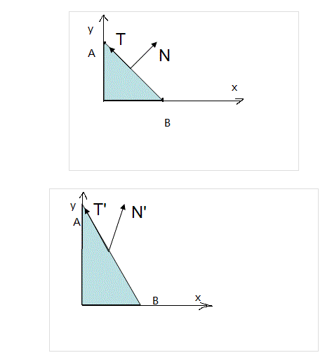

法向量变换矩阵
前面的光照和着色频率中介绍到，我们需要对每个顶点设置法向量，必要的时候还需要对顶点法向量进行插值处理。但是法向量毕竟是向量，不是顶点，当我们使用模型矩阵对顶点进行变换时，并没有对顶点的法向量进行变换，这是不行的。
那么我们能不能直接使用模型矩阵对法向量进行变换呢？理论上，如果我们只是对模型进行旋转，那么法向量也会一并旋转，那么是可行的，但是如果当对模型进行缩放之后，法向量就有问题了。
先不考虑三维坐标，在 XY 坐标系上有两条线 f1 和 f2，那么方程如下：
$$f1(x) = x \ ， \ f2(x) = -x$$
从方程可知他们的斜率相乘为 -1 所以互相垂直，如果我们对 Y 轴压缩两倍，即除以 2，那么方程变为：
$$f1(x) = \frac{x}{2} \ ， \ f2(x) = -\frac{x}{2}$$
这个时候斜率相乘为 -1/4，两条线不再垂直。
放到三维空间中上述的计算还是成立，f1 取任意非零的值可以看做某个三角形面上的向量，而 f2 取任意值则可以看做这个面的法向量， 如果法向量使用模型矩阵进行变换，就不再和对应的平面垂直了。所以模型变换矩阵不是法向量的变换矩阵。以下是一个示例图：
图片来自 http://eclipseflower.github.io/2017/01/22/normal-tran/
推导
既然知道模型变换不能直接用于法向量的变换，那我们就需要为法向量的变换矩阵进行推导，我们设 $M$ 是模型变换矩阵，$G$ 是法向量的变换矩阵，$p0$ 和 $p1$ 是平面上的某两个个不相同的点，向量 $l$ 为 $p1 - p0$，向量 $n$ 是这个平面的法向量，示意图如下：
.jpg)
因为法向量垂直于平面，所以 $n$ 和 $l$ 是互相垂直的，那么它们的点乘就为 0，即：
$$ n \cdot l = 0$$
现在开始进行变换，设 $l'$ 是 $p0$ 和 $p1$ 经过模型变换后组成的新的 $l$ 向量，那么有：
然后使用 $G$ 矩阵单独对法向量 n 变换得到 $n'$，有：
$$n' = Gn$$
要使得变换后法向量还和原本的平面垂直，那么 $n'$ 也会继续垂直于 $l'$，所以它们的点乘还是 0，即：
$$n' \cdot l' = 0$$
代入前面的式子得到
$$ Ml \cdot Gn = 0$$
对于向量有 $A \cdot B = A^TB$（见后文【向量点乘与转置】），而 $Ml$ 和 $Gn$ 都是向量，所以有：
$$(Gn)^TMl = 0$$
对于矩阵有 $(AB)T = B^TA^T$ ，所以有 $(Gn)^T = n^TG^T$，带入上式有：
$$n^TG^TMl = 0，记作 ①$$
前面说到过 n 和 l 是垂直的，所以 $l \cdot n = 0$，还是根据向量计算 $A \cdot B = A^TB$，所以有：
$$l \cdot n = n^Tl = 0，记作 ②$$
① 和 ② 都是乘以 $l$ = 0，但是前面我们说了 $l$ 是 $p1 - p0$，不是 0 向量，所以两个式子的前面部分相同，有：
$$n^TG^TM = n^T$$
一个矩阵只有乘以单位矩阵才等于它本身，令单位矩阵为 I，上式可转化为：
$$G^TM = I$$
根据矩阵乘以它的逆矩阵为单位矩阵，所以：
$$G^T = M^{-1}$$
最后两边进行转置，得到法向量的变换矩阵为：
$$G = (M^{-1})^T$$
综上，法向量的变换矩阵是模型变换矩阵的逆转置矩阵。注意我们计算的时候是假定 M 是任何变换的矩阵，所以平移，旋转，缩放等所有变换都不影响法向量的计算。
向量点乘与转置
前面使用到了 $A \cdot B = A^TB$，我一开始看的时候也是一脸懵逼，点乘是标量，矩阵相乘是矢量，怎么可能会相等。后来才注意到这是向量的运算。
我们给定任何向量 A 和 B 分量数目相同：
$$A = \begin{bmatrix} a1 \\ a2 \\ a3 \\ ... \end{bmatrix}，B = \begin{bmatrix} b1 \\ b2 \\ b3 \\ ... \end{bmatrix}$$
它们的叉乘当然没问题，但是可以观察到他们的叉乘结果实际上和 $B^T$ 乘以 A 的结果完全相同，即：
一阶矩阵被认为是个数，所以式子 $A \cdot B = A^TB $ 被认为是成立的。